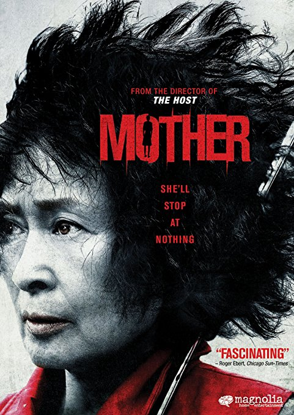

Mother
Bong Joon-ho
An unnamed widow lives alone with her only son, selling medicinal herbs in a small town in southern South Korea while conducting unlicensed acupuncture to the town's women on the side. Her son Yoon Do-joon is shy, but prone to attack anyone who mocks his intellectual disability. She dotes on him and scolds him for hanging out with Jin-tae, a local ne'er-do-well. When Do-joon is nearly hit by a car, he and Jin-tae vandalize the car and attack the driver and passengers as revenge. Jin-tae blames Do-joon for the damage done to the car, and Do-joon is sued. The debt causes Mother to struggle.
The Korean version